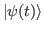
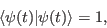

Quantum theory is build upon a concept of a closed quantum system. This is a necessary idealization which we need for a start. It would be, however, better to completely forget it once the concepts of quantum theory become somewhat more familiar. Later in this text, we will try to explain why.
We describe those physical properties of a molecular (or atomic) system
that are important for its dynamics by the so-called Hamiltonian
(or energy) operator . The state of the system is described
by a state vector
 which can
be time dependent. All operators, not just the Hamiltonian can act
of the state vector and change it
The signature of the two vectors being different is the fact that
their scalar product, once they are normalized, is not one. For all
state vectors we assume
|  | (2.2) |
| (2.3) |
In Quanta
 the state vector is represented by
the
the state vector is represented by
the StateVector class,
and the Hamiltonian is correspondingly represented by the Hamiltonian
class (see Quanta
 documentation).
documentation).
The time evolution of a closed quantum mechanical system is governed
by the Schlatin1rlatin9ödinger
equation which reads
| (2.4) |
StateVectorEvolution
which represents
on a given interval of time with
a given initial state
A very important quantity for formal manipulations in quantum mechanics
is the so-called evolution operator
| (2.5) |
| (2.6) |